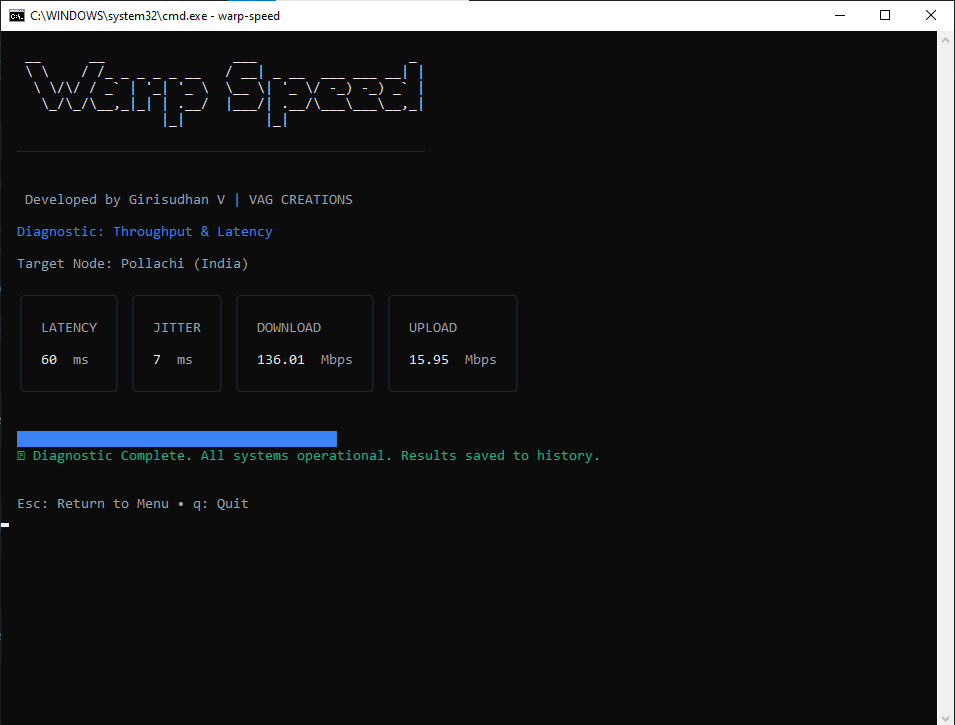
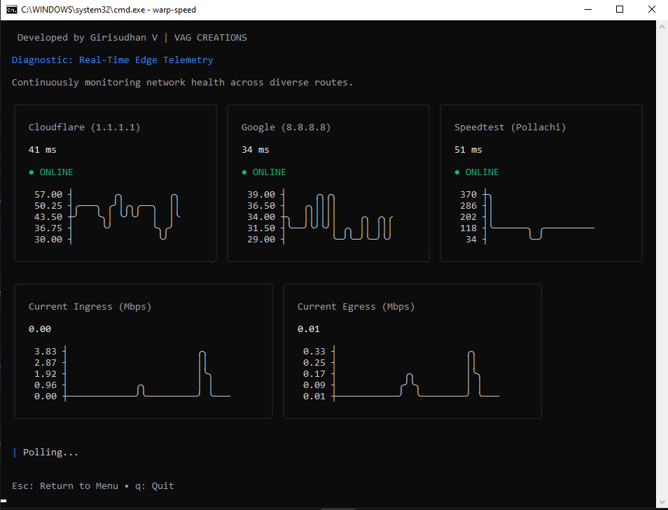
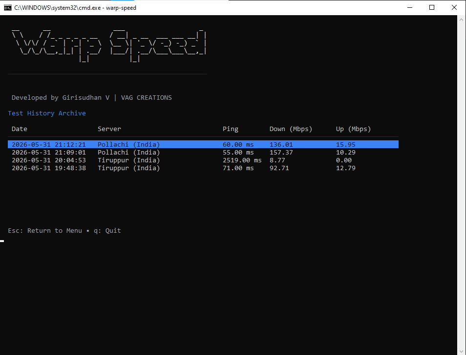

Diagnostic Speed Test
Run a full sequential diagnostic (Ping, Download, Upload) with a gorgeous progress bar UI. If you haven't picked a server, Warp-speed will intelligently intercept the test and guide you to select a node.

Live Sparkline Telemetry
Monitor your network's pulse. Instead of static numbers, watch live ASCII line graphs plot your latency to Cloudflare, Google, and your active edge node in real-time. Keep a close eye on your exact Ingress and Egress bandwidth without leaving the terminal.

Global Node Targeting
Stop settling for auto-selected servers. Warp-speed pulls down a comprehensive list of global edge nodes, allowing you to fuzzy-search by City, Country, or Sponsor to pinpoint the exact routing you want to test against.

Persistent History Archive
Never lose a speed test again. Every successful diagnostic is automatically archived to a local JSON database. Navigate through your last 100 tests via a beautiful, interactive data table built with Charm.sh.
